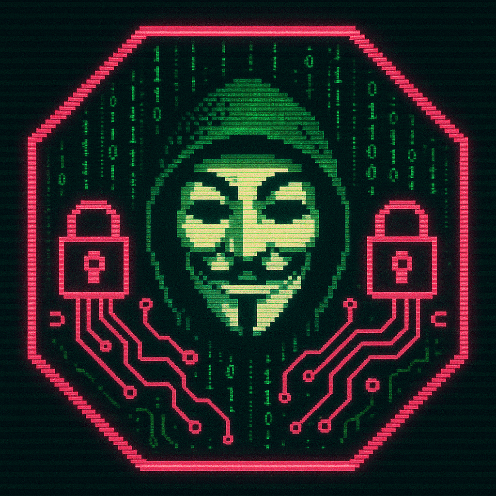

Root-Me – Challenges Hacking
- Contexte : Plateforme de challenges hacking et cybersécurité
- Objectifs : Monter en compétence offensive & CTF, scripting
- Compétences : Scripting Python, Linux, Réseau, Web, Forensic
- Outils : Python, Wireshark, Burp Suite, Bash, Metasploit
Résolution de challenges Root-Me (web, crypto, réseau, forensic, pentest). Apprentissage pratique de la cybersécurité offensive, automatisation de scripts pour résoudre des épreuves répétitives, rédaction de rapports (Write-ups) et veille technique constante.